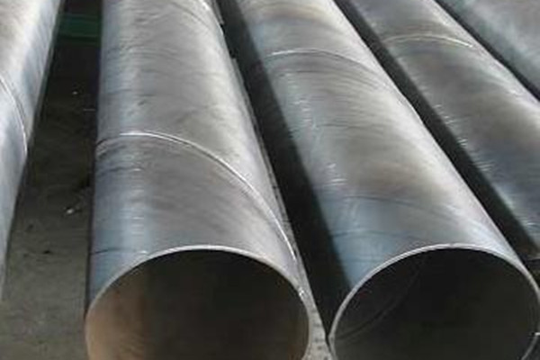

螺旋管标准格会迎来一定幅度的反弹行情

快要过来的6月，螺旋钢管市场继续疲软。上海瑞坤金属资料无限公司总经理李忠双预测，短期内上海冷热轧卷板市场价钱尚难下跌，其中冷轧卷板市场价钱或小幅下探。
市场调研显示，近期上海冷热轧卷板市场价钱均有下跌，次要缘由是下游需求缺乏，供大于求矛盾加剧。往年初以来，我国冷轧卷板的产量增速坚持较快增长。统计数据显示，与此同时，热轧卷板产量却在增加。前期汽车需求或进一步膨胀，进而影响到对汽车用钢的需求。另外，和以后上海市场销售价钱根本持平，思索财务、螺旋管标准，资金费用和承兑免贴息后，贸易商盈利空间非常无限。
从根本面状况来看，我们并不能希冀螺旋钢管市场利空的要素能一扫而去，更为理想的是察看能否有支撑要素开端呈现，目前来看次要有以下几个利多要素有所显现：1、钢矿的期货价钱曾经处于超跌，无论是螺纹钢还是铁矿石的期货价钱比照其现货价钱在短期内的跌幅都更大，而国际铁矿石期货价钱的跌幅也分明大于国外的掉期价钱的跌幅。2、钢矿的消费利润都急剧下降，消费企业的盈余成为常态螺旋管标准，近期产能都开端遭到抑制，有增产的迹象出来。3、从盘面中可以看出，近日铁矿石的抗跌性开端强于螺纹钢，螺纹钢与铁矿石期货价钱的比值开端回落，阐明原有的下跌形式有改动的迹象，铁矿石下方的支撑力度开端加强。
地址：河北沧州螺旋钢管生产基地
手机：186-3170-5801 == QQ791117